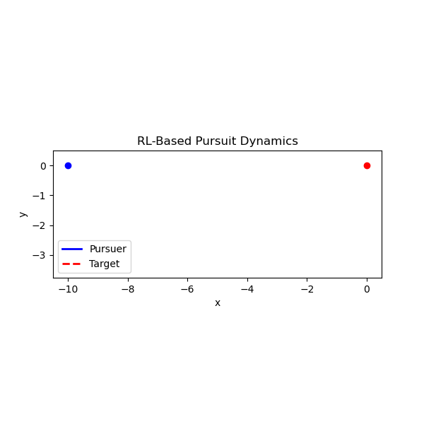
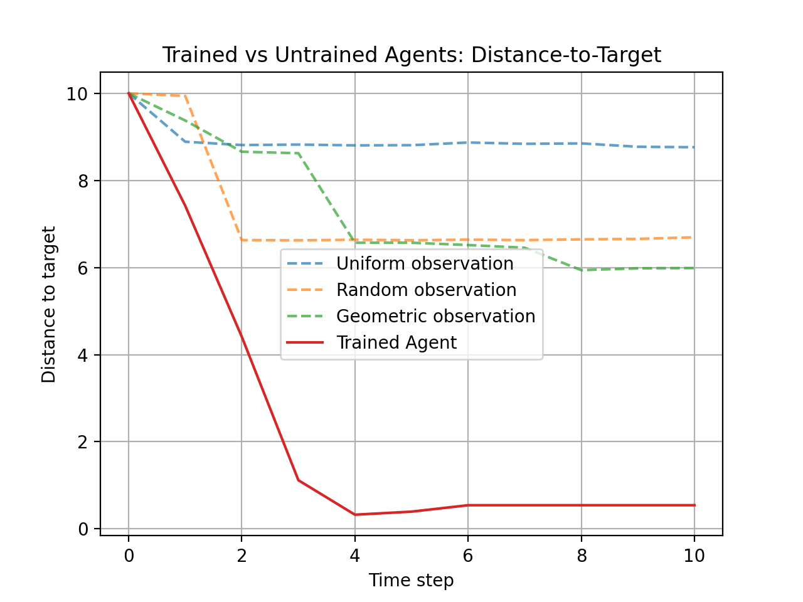
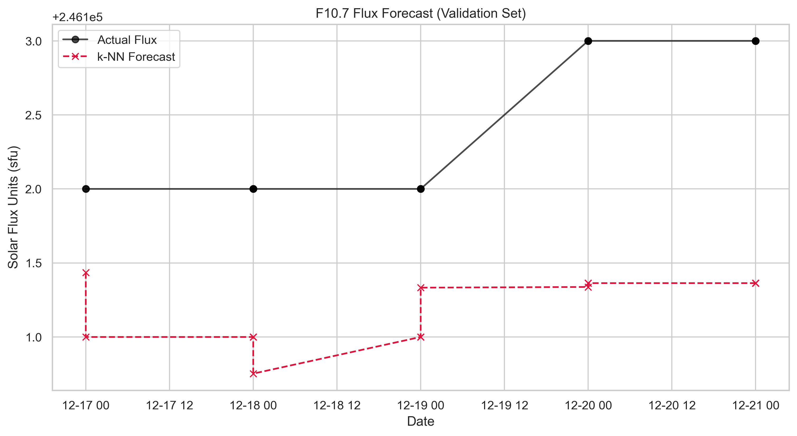

Hello! I’m an applied mathematician with a strong foundation in modeling, statistics, and computation. My work centers on extracting insight from complex, noisy data using tools from stochastic modeling, stochastic analysis, and machine learning. I’ve applied these methods to real-world problems ranging from biological systems to engineering applications, combining rigorous modeling with modern data analysis and computational techniques.

Selected Projects in Data Science and Machine Learning
Adaptive Pursuit via Reinforcement Learning (RL)
We study a 2D stochastic pursuit problem: a pursuer tries to catch a randomly moving target under a limited observation budget. The random motion is Brownian although we also studied Lévy Walks. The pursuer moves at constant speed and updates its path toward the last observed target position. Observations are limited to Nobs over a fixed time horizon. An RL agent is trained using a policy gradient method (PPO) to choose observation timing actions that maximize capture efficiency. Reward is +1 for catching the target (being within the catch radius), otherwise negative proportional to distance.
Trajectory Visualization
The animation below shows the trained agent pursuing a Brownian target.

Distance-to-Target Comparison
Comparison of trained RL agent vs untrained observation schedules (uniform, random, geometric).

Solar Flux Forecasting with GPR and Wavelets
This project forecasts daily F10.7 solar radio flux using a Gaussian Process Regression (GPR) framework combined with time-series feature engineering and wavelet decomposition. The dataset consists of daily F10.7 flux measurements from the Canadian Space Weather database, spanning over 78 years. Predictive features include lagged flux values, rolling statistics, and wavelet-based trend and detail components. A Gaussian Process model with composite kernels is trained using a chronological train–test split.
Predictions vs Actual
Daily test set predictions for five days compared to true F10.7 flux.

Python code for these projects and other projects are found on GitHub.
Research
My research focuses on the development of mechanistic and data-informed mathematical models to understand the mobility and collective dynamics of microorganisms. Through my research, I have built expertise in modeling complex systems, performing statistical inference, running simulations, and supporting data-driven decision-making.
My papers with collaborators are listed here: Google Scholar.
Teaching
I believe mathematics is best studied and discovered within a welcoming and supportive community. Through my teaching and mentoring experiences, I have developed effective ways to engage students and foster such an environment, particularly in the classroom. Below are links to a sample syllabus and my course evaluations.
Syllabus for Ordinary Differential Equations (PDF)
Course Evaluations (PDF)
Miscellaneous
Outside of work, I enjoy reading broadly in fiction and nonfiction, always drawn to new and compelling perspectives. Check out my Goodreads profile to see my favorite books:
My Goodreads Profile
I enjoy walking and taking scenic pictures. Here are some of the pictures I took.